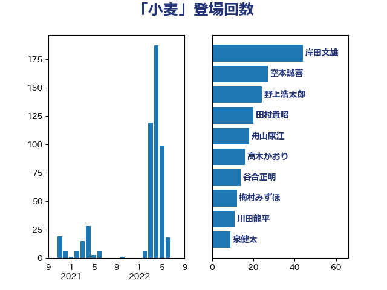

単語「小麦」

| 岸田文雄 | 自由民主党 | 44 回 |
| 空本誠喜 | 日本維新の会 | 27 回 |
| 野上浩太郎 | 自由民主党 | 24 回 |
| 田村貴昭 | 日本共産党 | 20 回 |
| 舟山康江 | 国民民主党 | 18 回 |
| 高木かおり | 日本維新の会 | 16 回 |
| 谷合正明 | 公明党 | 14 回 |
| 梅村みずほ | 日本維新の会 | 12 回 |
| 川田龍平 | 立憲民主党 | 11 回 |
| 泉健太 | 立憲民主党 | 9 回 |
| 田名部匡代 | 立憲民主党 | 9 回 |
| 横沢高徳 | 立憲民主党 | 8 回 |
| 紙智子 | 日本共産党 | 8 回 |
| 稲津久 | 公明党 | 7 回 |
| 住吉寛紀 | 日本維新の会 | 6 回 |
| 宮本徹 | 日本共産党 | 6 回 |
| 緑川貴士 | 立憲民主党 | 6 回 |
| 下野六太 | 公明党 | 5 回 |
| 大串博志 | 立憲民主党 | 5 回 |
| 大塚耕平 | 国民民主党 | 5 回 |
| 庄子賢一 | 公明党 | 5 回 |
| 武部新 | 自由民主党 | 5 回 |
| 神谷裕 | 立憲民主党 | 5 回 |
| 野間健 | 立憲民主党 | 5 回 |
| 中村裕之 | 自由民主党 | 4 回 |
| 和田有一朗 | 日本維新の会 | 4 回 |
| 林芳正 | 自由民主党 | 4 回 |
| 森田俊和 | 立憲民主党 | 4 回 |
| 熊野正士 | 公明党 | 4 回 |
| 進藤金日子 | 自由民主党 | 4 回 |
| 鈴木敦 | 国民民主党 | 4 回 |
| 須藤元気 | 無所属 | 4 回 |
| 緒方林太郎 | 無所属 | 3 回 |
| 金子恵美 | 立憲民主党 | 3 回 |
| 鈴木俊一 | 自由民主党 | 3 回 |
| 倉林明子 | 日本共産党 | 2 回 |
| 山田勝彦 | 立憲民主党 | 2 回 |
| 梅谷守 | 立憲民主党 | 2 回 |
| 沢田良 | 日本維新の会 | 2 回 |
| 清水貴之 | 日本維新の会 | 2 回 |
| 白石洋一 | 立憲民主党 | 2 回 |
| 石井啓一 | 公明党 | 2 回 |
| 石川香織 | 立憲民主党 | 2 回 |
| 穀田恵二 | 日本共産党 | 2 回 |
| 足立康史 | 日本維新の会 | 2 回 |
| 青柳仁士 | 日本維新の会 | 2 回 |
| 中野洋昌 | 公明党 | 1 回 |
| 井坂信彦 | 立憲民主党 | 1 回 |
| 仁木博文 | 無所属 | 1 回 |
| 伊佐進一 | 公明党 | 1 回 |
| 伊藤孝江 | 公明党 | 1 回 |
| 勝部賢志 | 立憲民主党 | 1 回 |
| 和田義明 | 自由民主党 | 1 回 |
| 大島敦 | 立憲民主党 | 1 回 |
| 安江伸夫 | 公明党 | 1 回 |
| 宮内秀樹 | 自由民主党 | 1 回 |
| 小林鷹之 | 自由民主党 | 1 回 |
| 小田原潔 | 自由民主党 | 1 回 |
| 小野田紀美 | 自由民主党 | 1 回 |
| 山崎誠 | 立憲民主党 | 1 回 |
| 山本博司 | 公明党 | 1 回 |
| 山際大志郎 | 自由民主党 | 1 回 |
| 岡本三成 | 公明党 | 1 回 |
| 岩渕友 | 日本共産党 | 1 回 |
| 島尻安伊子 | 自由民主党 | 1 回 |
| 後藤祐一 | 立憲民主党 | 1 回 |
| 徳永久志 | 立憲民主党 | 1 回 |
| 杉尾秀哉 | 立憲民主党 | 1 回 |
| 松野博一 | 自由民主党 | 1 回 |
| 江藤拓 | 自由民主党 | 1 回 |
| 浦野靖人 | 日本維新の会 | 1 回 |
| 渡辺創 | 立憲民主党 | 1 回 |
| 猪口邦子 | 自由民主党 | 1 回 |
| 田村まみ | 国民民主党 | 1 回 |
| 石井浩郎 | 自由民主党 | 1 回 |
| 石井章 | 日本維新の会 | 1 回 |
| 礒崎哲史 | 国民民主党 | 1 回 |
| 竹内譲 | 公明党 | 1 回 |
| 舞立昇治 | 自由民主党 | 1 回 |
| 萩生田光一 | 自由民主党 | 1 回 |
| 葉梨康弘 | 自由民主党 | 1 回 |
| 藤木眞也 | 自由民主党 | 1 回 |
| 足立敏之 | 自由民主党 | 1 回 |
| 馬場伸幸 | 日本維新の会 | 1 回 |